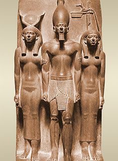
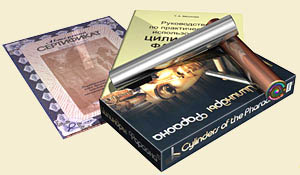

Кремлевские и китайские таблетки, народная медицина по Малахову, тибетское наследие… Чем в наше время можно удивить простого среднестатистического россиянина, любящего полечиться?.. Оказывается, существует еще одно «чудо» медицины, пришедшее к нам из очень глубокой древности (а именно, из древнеегипетской культуры) — Цилиндры Фараона, которыми можно вылечить сердечно-сосудистые заболевания, атеросклероз, нейротрофические нарушения, бессонницу, стресс и т.д.
На чём только люди не хотят заработать (и успешно это делают)… Разумеется, здоровье — идеальная сфера для такого рода деятельности. Хоть здоровье и не купишь, зато разных средств, для достижения оного продать можно множество. В последние годы обывателей уже не удивишь ни кремлёвскими таблетками, ни народной медициной по Малахову, ни даже китайским и тибетским наследием. Это прекрасно понимают некоторые товарищи и смотрят шире и, что очень важно, глубже. Какие там китайцы?! Замахнёмся на самих фараонов, древнее медицины не отыскать! И, действительно, жизнь фараонов полна загадок. И, разумеется, изобретатели всяких новых способов оздоровиться разгадали их все! Например, у некоторых изваяний, оставленных нам древнеегипетской культурой, мы можем видеть зажатые в руках предметы цилиндрической формы, назначение которых историкам неизвестно.

Египтологи имеют на этот счёт самые разные версии: рукоятки носилок, свернутые ароматические платки, тубусы для папирусов, печати… Обладателем полной информации о Цилиндрах Фараона оказался наш соотечественник физик-теоретик Владимир Павлович Ковтун, организовавший научные исследования Цилиндров Фараона. Оказалось, что исследования показали: воздействие Цилиндров Фараона переводит организм в иное, более «высокое» энергетическое состояние, при котором активнее протекают восстановительные процессы, способствующие «гармонизации» всего организма. Этот эффект достигается сочетанием гальванотерапии, металлотерапии, минералотерапии и магнитотерапии. Во-первых, по мнению некоторых исследователей, Цилиндры Фараона являются резонаторами на определённые виды физических полей. Во-вторых, наличие контактной разности потенциалов между медью, цинком и кожей рук создает в теле слабый электрический ток. В-третьих, медь сама по себе обладает рядом целебных свойств и с давних пор широко применяется в медицине. В-четвертых, создаваемые наполнителями физические поля оказывают целебное воздействие на организм через биоактивные точки ладоней.
Да, с таким набором положительных моментов цилиндры — это просто чудо-лекарство! Вот, кстати, и показания к применению:
сердечно-сосудистые заболевания
нейротрофические нарушения
болезни выводящих путей
бессонница
а также в качестве средства для снятия стрессов и профилактики атеросклероза
Следует отдать дань уважения продавцам чудо-цилиндров: в отличие от большинства подобных продуктов, цилиндры имеют и противопоказания:
Не рекомендуется менять Цилиндры местами: одновременно брать Солнечный Цилиндр в левую, а Лунный — в правую руки.
Не использовать Цилиндры в состоянии алкогольного и наркотического опьянения.
Шизофрения.
Эпилепсия.
Не рекомендуется использовать Цилиндры во время беременности.
Использование такого мощного брэнда, как древняя египетская цивилизация, не могло не принести своих плодов. Цилиндры можно заказать по почте и в сети интернет. Стоимость комплекта Цилиндров Фараона для покупателей из России: 4880 руб. Стоимость комплекта Цилиндров Фараона для иностранных покупателей: 178€.

Конечно же, их используют не только для лечения. Если «заниматься» с цилиндрами регулярно, то это может привести к ряду интересных и полезных последствий. Кроме профилактического эффекта, со временем начнут открываться скрытые функции, улучшатся зрение, слух, обоняние, общая чувствительность, усилится интуиция.
Энергия организма, получая подпитку энергией космоса, начинает сильнее циркулировать по каналам. В местах, где в результате болезни образовалась непроходимость каналов, возникает сопротивление циркуляции, и энергия может ударять в болезненный очаг, вызывая разного рода ощущения и спонтанные движения. Эти движения способствуют прочищению каналов и устранению заболевания.
Таким образом, мы видим очередной пример того, как можно без наличия доказательной базы продавать нашему малограмотному населению нечто, по всей видимости, влияющее на организм человека. Делать это, прикрываясь авторитетом давно умерших людей и не стесняясь при этом называть свою работу научным исследованием. В общем, всё как обычно…
В.В. Привольнев
Эта статья опубликована на сайте Антибиотики и антимикробная терапия http://antibiotic.ru/